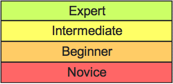
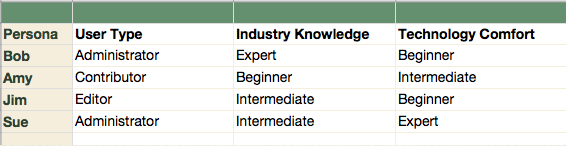
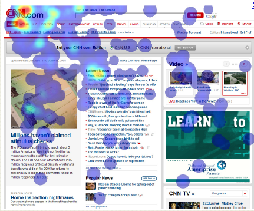
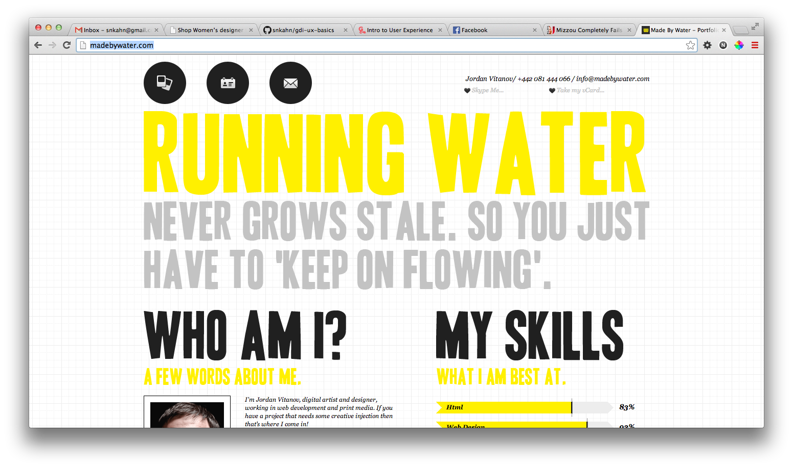
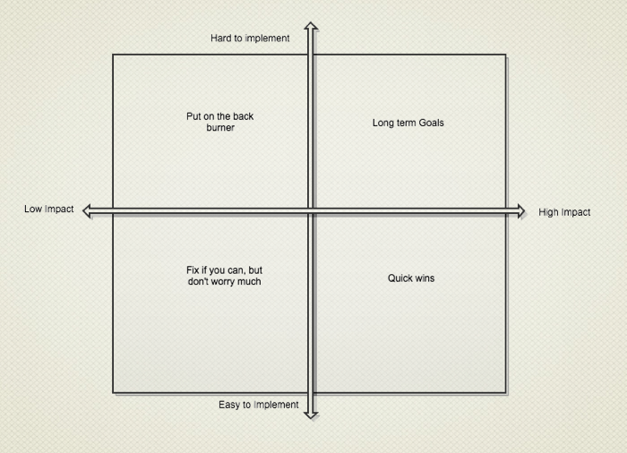
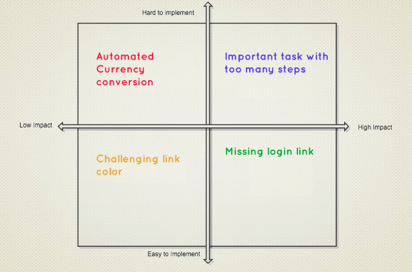
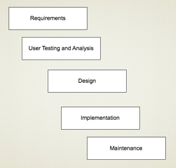
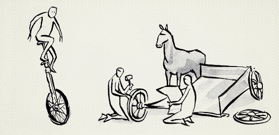

Intro to User Experience
Class 2
Intro to User Experience
Class 2
Welcome
Girl Develop It is here to provide affordable and accessible programs to learn software through mentorship and hands-on instruction.
Some "rules"
- We are here for you!
- Every question is important
- Help each other
- Have fun!
Introduction
I'm here to help!
- Twitter: @aarahkahak
- Email: snkahn@gmail.com
Agenda
- Personas
- Exercise: Create a proto-persona
- Identifying Problems
- Prioritizing Problems
- Exercise: Prioritizing Problems
- Getting Buy-in
- UX and Project Management
1. What is a Persona, and why make one?
Example PersonaProto-personas
A lightweight starting point.
Creating a Persona
First, you'll need some information
What does success look like?
How familiar is this person. . .
- With the tasks in your application?
- With applications in general?
- With the internet in general?
- With computers in general?
Combinations of different characteristics
Your user might be an expert with the tasks of the industry, but not great with the technology you're building in.
Complexities of users
Make a template.
- Name
- Job title
- Technical comfort
- Location
- Industry Knowledge
- What they care about
2. Exercise: Create a Persona
Applying what we’ve discussed here, pick a use case for WebAssign (for example, a professor who is good at technology but new to WebAssign,) and create a persona for that user. Give them a name, a backstory, and a picture, in addition to adding 3-4 additional characteristics to the skeletal template that we discussed.
3. How to know when you have a problem
What does a usability problem look like?
Cues in metrics

- Too much clicking
- Not enough clicking
- Too much scrolling
- Slow navigating
Begin with the obvious
Missing anything?
- Can they tell who you are and what you do on the homepage?
- Does it answer all the questions you'd expect them to ask?
- Is there a clear call to action?
- Can they figure out how to contact you?
- Example: How the heck do I log in?
Listen for the negative
- I'm not sure how to go back.
- Those colors are hard to read
- I can't get out of here
Listen for uncertainty
- What do these pictures mean?
- I'm not sure
- Where do I go next?
Talk to other people in your organization
Customer support, sales, anyone who talks to your users.
Dark Patterns
The Darkness4. Prioritizing Problems
Don't panic!
Not all problems are created equal.
Some sample problems
- Missing login link from homepage
- 60% of users fail to complete major multi-step task without help
- Link color may be difficult for some users to read
- Users must manually select their currency type, instead of having the app do conversions for them
Prioritized
Band-aid or Shotgun?
Iterative Fixes
99% of Problems
5. Exercise: Finding Problems & Prioritizing
- Go to CNN.com
- Take 10 minutes to find three things you think might be problems.
- We'll discuss as a group, and then try to prioritize fixing them.
6. Getting Buy-in
Take matters into your own hands.
Create a process document
A document can help lend authority and substance, demonstrating to management that this is serious, grown-up business.
Start doing
Examples
- Guerilla testing
- Be the evangelist
- Lurk
- Be patient
Share your successes
If it's working, let everyone know!
- Quotes from users stating when something is easy.
- Before and after screenshots or heatmaps.
- Before and after user testing video
7. Working with Project Management
Where does UX fit in?
Waterfall

UX for Waterfall
- Allows more time for careful analysis
- Less flexibility in rolling out fixes quickly
- Be careful about prioritizing fixes, since you have less ability to roll them out quickly.
- Plan for detailed deliverables and careful analysis documents.
Agile

UX for Agile
- Things can be fast and furious
- Fixes can be implemented quickly, or take more time if they’re larger
- Rapid turnaround times allows for real life feedback, which can decrease the need for in-depth studies before deploying
Key differences of Agile UX
- Low fidelity design artifacts, like paper prototypes
- Collaborative brainstorming/design
- Immediate feedback from users and colleagues
- People and ideas over artifacts